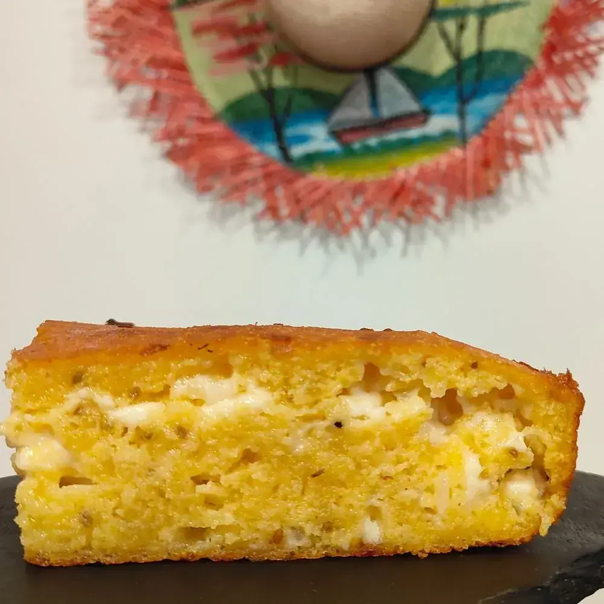

01

PARAGUAY
Las recetas se aprenden mirando
Loren nació en San José de los Arroyos, en el corazón de Paraguay. Allí, como en tantas casas paraguayas, la cocina se heredaba sin libros: mirando a las madres y a las abuelas amasar la chipa, cuajar el queso y encender el fuego del asado del domingo.
Esas recetas de sus padres y abuelos son, todavía hoy, la base de todo lo que sale de nuestra cocina.
“Nuestra intención es que al probar un bocado podamos transportar hasta Paraguay a los comensales.”